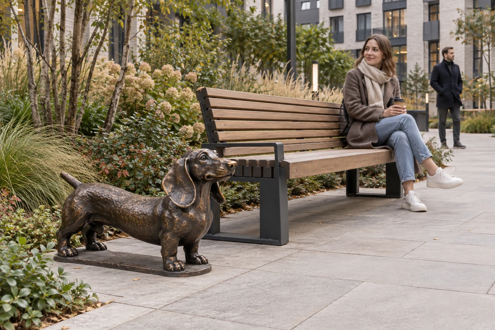
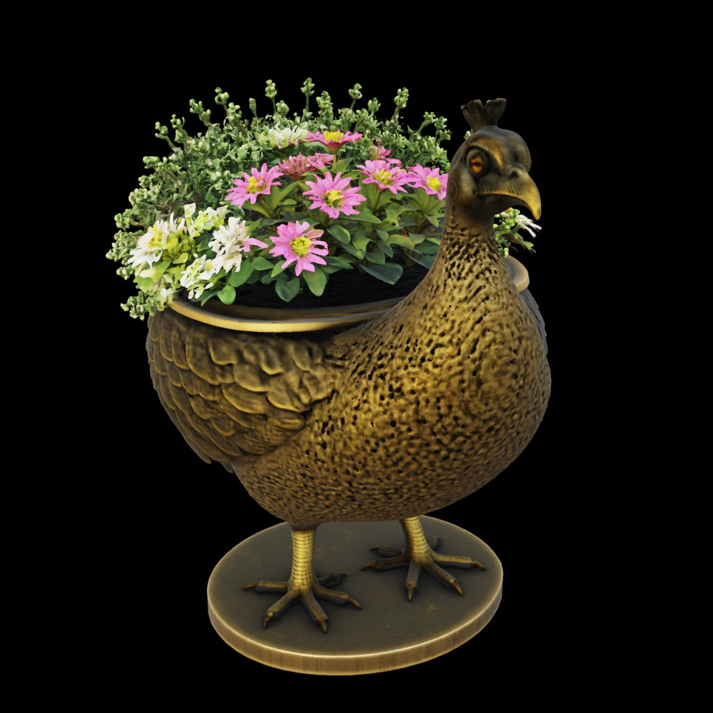
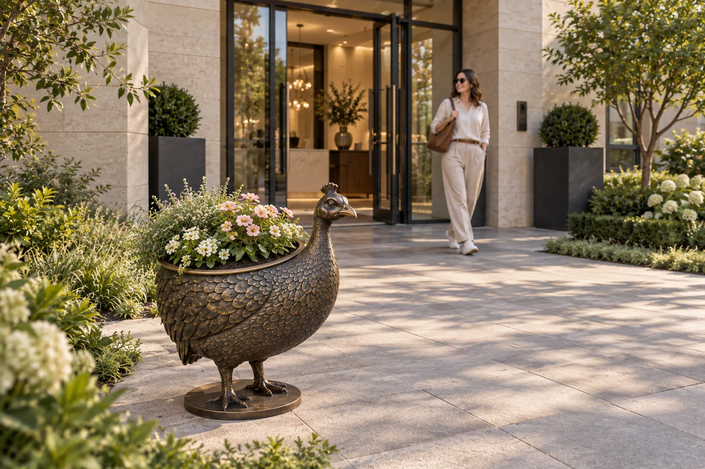
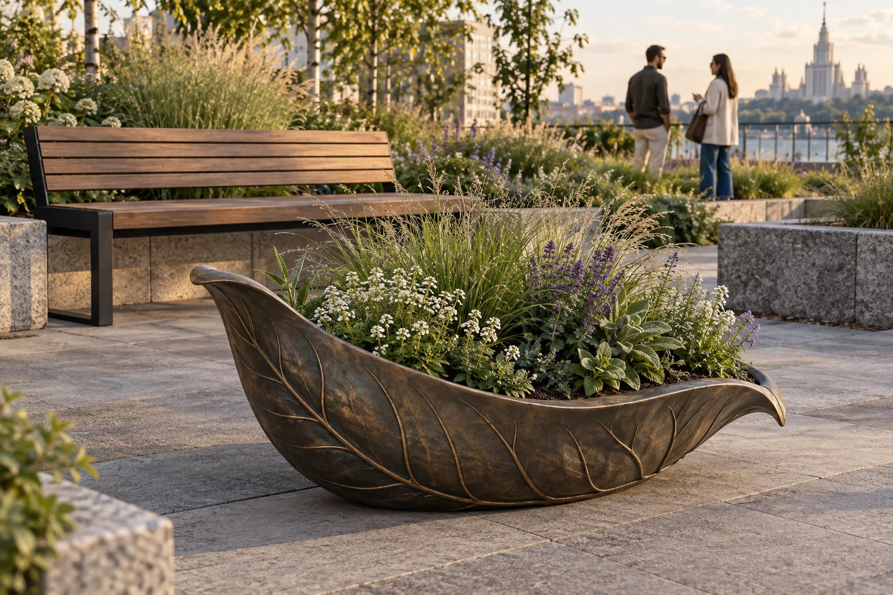
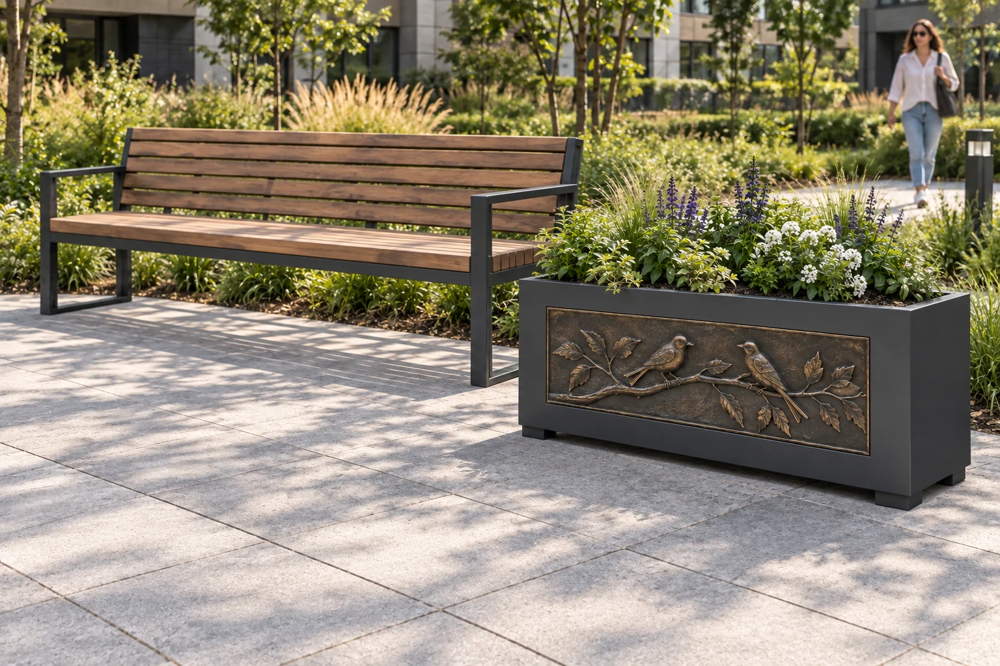
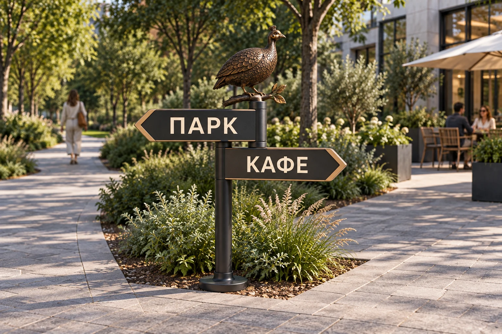

Богачо
Предлагаем опереться на скульптурную разработку, художественные элементы и отделки Богачо. Возможности индивидуального исполнения заявлены на сайте производителя ↗.

Предложение Хоббики для Богачо · 7 октября 2026
Соединить скульптурный характер Богачо с решениями Хоббики для благоустройства — и создать совместную коллекцию для мест, в которые хочется возвращаться.
Посмотреть предложение ↓01 / Общее направление
Предлагаем развивать художественные элементы как часть готовых решений для благоустройства: мебель, озеленение, свет и навигация в едином образе.
Скульптура рядом со скамейкой, цветочница у входа, птица на парковом фонаре или указатель с характером — каждый предмет даёт месту узнаваемую деталь и понятную функцию.
Первые сценарии для проработки: дворы жилых комплексов, камерные парки, загородные отели, рестораны и частные сады. Это направления проверки спроса, а не подтверждённые заказы.
Предлагаем опереться на скульптурную разработку, художественные элементы и отделки Богачо. Возможности индивидуального исполнения заявлены на сайте производителя ↗.
Предлагаем Хоббике развивать продажи через архитекторов, проектировщиков, застройщиков и дилеров, сочетать изделия с мебелью и выполнять согласованную часть производственных работ.
Согласовать матрицу, наружное исполнение, конструкцию, цены, документацию и ответственность за готовое изделие. Затем проверить образцы и выводить изделия в проекты.
Что предлагаем обсудить на первой встрече
Выбрать первые изделия, закрепить роли и проверить совместную модель на образцах.
Стартовые кандидаты из трёх направлений. Предлагаемая отделка — под патинированную бронзу; следующий шаг для каждого — конструкция, калькуляция и образец. Итоговый состав выбираем вместе.
Коммерческая основа: Хоббика закупает изделия или элементы Богачо и продаёт готовое решение; самостоятельные продажи Богачо сохраняются, вклад в привлечённые проекты оплачивается по согласованным правилам.
Подробнее о модели сотрудничества ↓02 / Четыре направления
21 визуальная концепция: от небольшого акцента в цветнике до полноценного паркового фонаря. Откройте изображение, чтобы рассмотреть детали.
Все направления · 21 концепция
Проектные габариты в сантиметрах, с основанием. Фонтан — возможный второй этап из-за требований к обслуживанию.
03 / Характер отделки
Одна компоновка фонаря со львом в двух визуальных решениях: тёплая патинированная бронза и серебристая поверхность под нержавеющую сталь.
Это сравнение внешнего вида. Рендер не подтверждает состав металла, технологию покрытия или стойкость. Отделку выбираем под архитектуру, мебель и условия места.

04 / От образа к объёму
Для одной концепции выполнена экспериментальная реконструкция объёма по изображению. Сохранены восемь ракурсов в двух режимах: отделка и геометрия.
Этот просмотр помогает обсудить силуэт, чашу и основание. Скрытые поверхности восстановлены предположительно, точный масштаб не задан.
Здесь переключаются сохранённые изображения, а не вращается 3D-модель. Экспорт GLB пока не завершён; готовой сетки для передачи архитекторам или производству нет. Следующий шаг — выгрузить и проверить модель, затем разработать конструкцию и реальные размеры.
05 / Предлагаемая первая матрица
Предлагаем согласовать 3–5 изделий для первой проработки из этой подборки. Не запускать все направления одновременно: сначала образцы и экономика, затем расширение.
Эмоциональный акцент в готовом месте отдыха. Проверить декоративную серию и масштаб рядом с человеком.

Самостоятельный объект у входа. Проверить посадочный объём, дренаж, устойчивость и удобство ухода.

Спокойная природная пластика для современной архитектуры. Альтернатива персонажам.

Повторяемый корпус с художественной панелью. Проверить сочетание со скамейкой и возможность разных рисунков.

Ясная функция и узнаваемый силуэт. Проверить чтение стрелок и заменяемую информационную панель.
Птица на парковом фонаре, улитка со светом и рамка номера — кандидаты на продолжение после проверки первой матрицы.
Световые решения потребуют отдельной разработки модуля, крепления и доступа для обслуживания.
Приоритеты — наше предложение для обсуждения. Спрос и рентабельность пока не измерены.
06 / Как сотрудничать
Предлагаем закупочную модель: каждая сторона получает оплату своих поставок и работ, продавец сохраняет собственную маржу. Общая прибыль компаний не объединяется и не делится.
Согласованная цена художественной части или изделия, включающая затраты и прибыль Богачо.
Согласованные конструкции, комплектующие, покрытия, сборка и коммерческие расходы.
Хоббика продаёт комплект и сохраняет разницу после оплаты поставок и своих расходов.
Хоббика развивает согласованную матрицу для благоустройства. Изделия, каналы и территория фиксируются в приложении; эксклюзивность обсуждается отдельно.
Сохраняются. Богачо оплачивает заказанные работы Хоббики и отдельно согласованный вклад в привлечение и сопровождение конкретного проекта.
Общий реестр фиксирует объект, источник обращения и подтверждённую работу. Вознаграждение сохраняется при оформлении того же проекта через партнёра или подрядчика.
Производственная работа, включённая в цену изделия, повторно не оплачивается. Привлечение проекта имеет отдельное согласованное основание.
07 / Продажи через проект
Предлагаем подготовить единый комплект: от выбора образа и показа заказчику до спецификации, бюджета и закупки. Это задание на материалы, а не уже выпущенная библиотека.
Во всех материалах нужны единые названия, артикулы и обозначения отделок. Технические файлы — с датой и версией; характеристики и пригодность для наружного применения подтверждает Богачо.
08 / От предложения к запуску
Выбрать первую матрицу, зафиксировать роли, канал продаж, права на разработки и правила регистрации проектов.
Результат: ассортимент и коммерческие принципы.Подтвердить материалы и наружное исполнение, распределить операции, подготовить чертежи, закупочные цены и график изготовления.
Результат: согласованное задание и калькуляция каждого изделия.Оценить масштаб на месте, устойчивость, крепление и уход. Для кашпо — посадочную ёмкость и дренаж; для света — модуль и обслуживание; для навигации — чтение с точки подхода.
Результат: принятый образец и подтверждённые ограничения эксплуатации.Собрать каталог, технические карточки и модели, совместные композиции с мебелью. Показать архитекторам и получить предметную обратную связь по проектам и цене.
Результат: комплект для проектирования и проверка коммерческого интереса.Выводить подтверждённые изделия в проекты, вести реестр и сверку заказов. Расширять коллекцию по итогам пилота и фактическим запросам.
Результат: поставки, обратная связь и решение о следующей серии.Предложение к первой встрече
Предлагаем начать с обсуждения 3–5 концепций и согласования совместной модели работы.
01 Выбрать 3–5 изделий первой матрицы и одну базовую отделку; определить формы, которые Богачо готово развивать для улицы.
02 Назначить ответственных за форму, конструкцию, производство, монтаж и сопровождение; согласовать финансирование образцов и права на разработки.
03 Согласовать закупочную модель, самостоятельные продажи, регистрацию и защиту проектов, порядок разрешения пересечений.
04 Выбрать место пилота, состав образцов и критерии приёмки; определить, кто готовит калькуляцию, кто принимает образец и в какие сроки.
Ближайший совместный шаг — встреча по первой матрице и подготовка задания на выбранные образцы.
Версия предложения: 7 октября 2026 года. Подготовлено Хоббикой для обсуждения с Богачо.